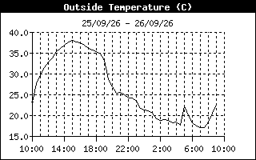
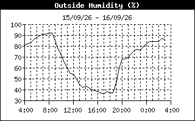
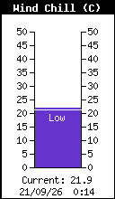
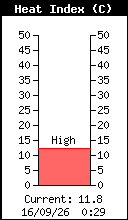
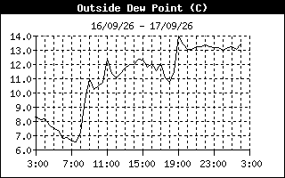
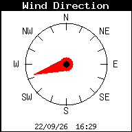
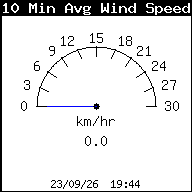
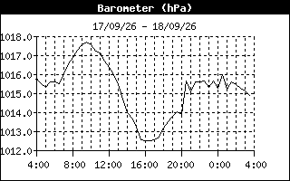

Última actualización
04/09/26 - 18:13
Salida Sol
8:25 hs
Puesta Sol
20:09 hs
Temperatura
25.0°C| Período | Mínima | Máxima |
|---|---|---|
| Diaria | 13.0°C | 26.3°C |
| A hs: | 6:51 | 14:25 |
| Mensual | 11.6°C | 36.6°C |
| Anual | 1.6 | 41.1 |

Temperatura últimas 24 hs
Humedad
37%| Período | Mínima | Máxima |
|---|---|---|
| Diaria | 35% | 83% |
| A hs: | 17:41 | 4:32 |
| Mensual | 22% | 94% |
| Anual | 22% | 96% |

Humedad últimas 24 hs
Sensación Térmica
Sensación por Viento
Wind Chill
Índice de Calor
Temp + Humedad
Punto de Rocío Actual


Precipitación & Lluvia
Lluvia del Día
0.0 mm
Intensidad Actual
0.0 mm/hr
Total Tormenta
0.0 mm
Lluvia Mensual
0.0 mm
Acumulado Anual
694.8 mm
Punto de Rocío (Histórico)
Evolución y registro del punto de rocío en las últimas 24 horas.

Punto de Rocío últimas 24 hs
Viento
Velocidad Actual
0.0 km/hr
Dirección Sector
ESE
Máximas Registradas
Diaria
12.9 km/hr
Mensual
19.3 km/hr
Anual
25.7 km/hr


Presión Barométrica
Presión Actual
1008.7 hPa
Tendencia (3 hs)
Falling Slowly
| Período | Mínima | Máxima |
|---|---|---|
| Diaria | 1008.0 hPa | 1016.2 hPa |
| A hs: | 16:31 | 9:41 |
| Mensual | 1003.0 hPa | 1019.3 hPa |

Este servicio de datos online puede interrumpirse eventualmente por cortes de energía o caídas del enlace de red local.